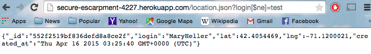
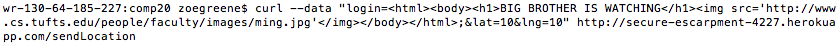
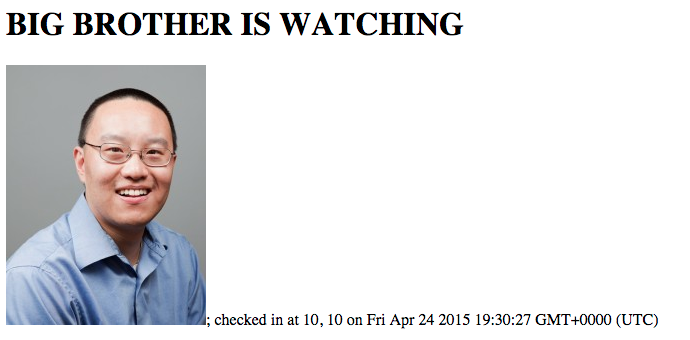
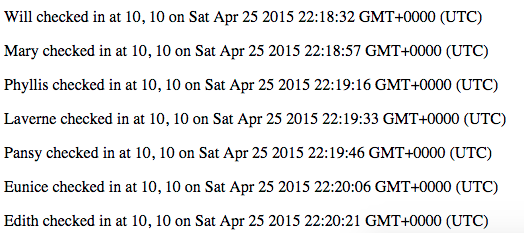

This assignment documents the security and privacy vulnerabilities associated with a web
server and a web application developed by Alex Ravan.
As detailed by my client's client, this application is meant to retrieve a user's current
location and send this location to a separate database. The application retrieves and displays
the locations of all users on the map.
I was "hired" to examine the product and provide a report of any security or privacy issues
that may cause problems and potential solutions to resolve such concerns.
Methodology
Testing was initially carried out in a "black box" fashion, wherein the source code was not
examined to simulate what an attacker has to work with. I used curl
and the URL to manipulate data.
I then completed "white box" testing to find more precise methods of resolution of the
concerns.
Abstract of Findings
The security issues identified in this report highlight the general principle that user
input should not be trusted. Attacks by malicious or pesky users may render the site
inaccurate or 'graffiti-ed' with spam content. Other attacks put user privacy at risk via
the distribution of information related to their precise location. The solutions I offer to
amend these concerns involves checking the content that users of the application create
before publishing it for all to see.
Issues Found
Injection: Accessibility of other client's information
Issue: Any user can access the stored location and time of all the other users in the database by querying logins that are not equal to their own.
Location: GET function, /location.json
Severity of Issue: This issue is of high severity because it allows private
information on one's whereabouts to be publicly accessible to users that could be
pesky or even dangerous.
Description of Issue: I found it by typing the following into the URL in the
browser. Doing so creates an associative array that changes the query to return data
where the username is not the one entered.
Proof of vulnerability: Another stored user and their information became
available to me. It only returned one user's information because his code specifies
to find only one in the GET function.

Resolution: in the GET function, run a url.search to ensure that "login=" has
been entered exactly as is such that [$ne] will be excluded. Then run url.slice to
search from that index.
Vulnerability to XSS Part 1
Issue: Does not prevent against the injection of JavaScript input from users
Location: Launched attack in HTTP POST, but it is executed upon refresh of the
page and thus HTTP GET.
Severity of Issue: Moderate. The issue is easily preventable (see resolution
below), but if not protected against it could allow malicious and persistent re-
directs to unsavory websites that are viewable by all users of the page.
Description of Issue: I found this issue by entering the following text as curl
data and refreshing the page to have it redirect to a catchy Kesha video.
Proof of Vulnerability: The page automatically redirects to the following.
Resolution: Sanitize input before storing it and use character encoding for
JavaScript.
Vulnerability to XSS Part 2
Issue: Does not prevent against the injection of JavaScript input from users
Location: Similar to above. Launched attack in HTTP POST, but it is executed upon
refresh of the page and thus HTTP GET.
Severity of Issue: Moderate. The issue is easily preventable (see resolution
below), but if not protected against it could allow malicious and persistent display
of unsavory images or text that is viewable by all users of the page.
Description of Issue: I found this issue by entering the following text as curl
data.

Proof of Vulnerability:

Resolution: Similar to above. Sanitize user input before storing it and use
character encoding for JavaScript.
Ease of Data Manipulation
Issue: Users can create false locations or fill the database with multiple
entries of the same person under different logins.
Location: Attack is launched in HTTP POST.
Severity of Issue: High. The user could run a script to fill the database
and exceed storage capacity. Because the app is hosted on Heroku, it could end
up charging the developer a sum of money. This also ruins the purpose of the
site as an accurate map of users.
Description of Issue: This issue was identified by the fact that I could
enter scores of curl data to test other features of the site. I was able to
repeatedly enter information from my machine with different logins and inaccurate
latitudes and longitudes.
Proof of Vulnerability: The following data was all created by me.

Resolution: Connect user information to the IP address of the machine they
are connecting from and store this data as cookies so that the user can only use
one login.
Conclusion
The issues with The Maurauder's Map in this report mainly deal with the vulnerability of the site to malicious client-side input. All of these issues affect the accuracy and purpose of the site and put the privacy and security of other users at stake. The scheme of the website might also be restructured as it allows users to enter any random latitude and longitude as their location. Changes to protect against other attacks should be fairly simple to account for now that they have been identified. My implementation charge is next semester's tuition.